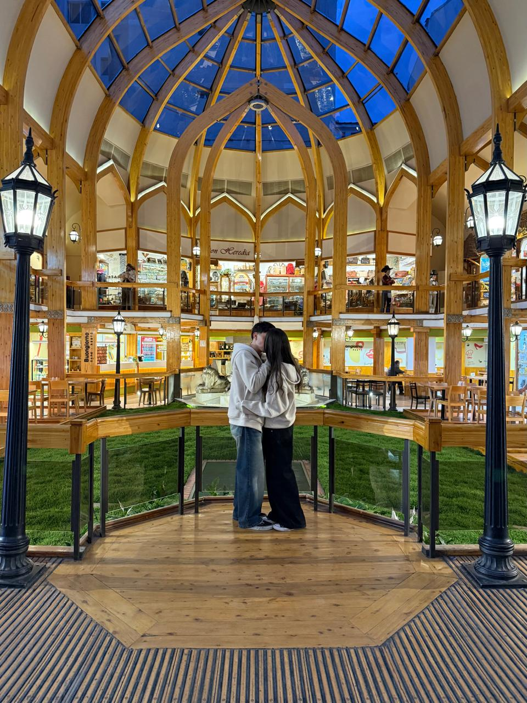

Edición especial · 31 de octubre de 2026
Nuestra pequeña historia
La nuestra empezó con una merienda, siguió con unos dorilocos y aquel inolvidable «no te da». Desde entonces, este primer año se fue llenando de Bariloche, flores amarillas, sushi, viajes, aniversarios mensuales y un montón de pequeños momentos que quiero guardar para siempre.
Para Ana (Lady Ansandri), de su Vizconde Federico.

Capítulo primero
Todo empezó sin que lo supiéramos
n día nos dieron ganas de hacer algo. Estábamos hablando por WhatsApp y organizamos una merienda con Zoe y Pedro. Cuando ellos se fueron, nosotros todavía queríamos quedarnos juntos un rato más.
Terminamos en casa preparando unos dorilocos —la receta habrá sido un desastre, pero terminó convertida en nuestro primer gran recuerdo—. Te quedaste a dormir y, desde entonces, empecé a sentirte distinta: ya no eras solamente mi gran amiga. Me gustaba hablarte al levantarme, acostarme en llamada y encontrar cualquier excusa para verte.
Nos costaba entender lo que nos estaba pasando a los dos. Empezamos a hacer más cosas juntos, a reírnos solos, hasta que llegó ese día que tanto esperábamos y nos costaba admitir. Te pedí que te callaras; apareció el inolvidable «no te da» y un beso hizo todo lo demás. Ahí empezó una historia que todavía me encanta contar.
Los quince capítulos de la crónica
Los capítulos que nos trajeron hasta acá
Desde los primeros dorilocos hasta el aniversario: cada capítulo sigue el recorrido, los detalles y las salidas que contaste en tu crónica.
Doce salidas mensuales ya forman parte del álbum. La número trece es la de nuestro aniversario; los capítulos que siguen los escribimos juntos.
Comunicado oficial · Sociedad del Ton
Una carta para Lady Ansandri
Con el sello de la casa y el corazón del Vizconde Federico.
«Mi queridísima Lady Ansandri: se rumorea en todo el ton que mi corazón ya no me pertenece, sino enteramente a usted. Mi afecto no conoce límites y mi admiración es el secreto peor guardado de la temporada. La amo y la quiero con una devoción que las palabras apenas pueden capturar.»
Con todo mi amor,
tu Vizconde Federico
Nuestro álbum
Pequeños instantes, toda una vida
Reuní acá las 52 fotos de nuestro primer año, incluidas las versiones JPG de las imágenes HEIC para poder abrir todo en cualquier navegador. Tocá cualquiera para verla a pantalla completa.
Versión web liviana, preparada para reproducirse en el navegador; el video original también está disponible para descargar.
Descargar video · MP4 HEVCVersión web liviana, preparada para reproducirse en el navegador; el video original también está disponible para descargar.
Descargar video · MP4 HEVCVersión web preparada para el navegador con el audio estéreo original; el MOV conserva también su pista espacial.
Descargar original MOV · con sonidoVer también los archivos originales
Las fotos HEIC también tienen una versión JPEG para verlas en cualquier navegador. Acá podés descargar esos originales y el álbum ZIP.


Fin del primer libro · No de la historia
Mi historia favorita
siempre va a ser con vos.
Gracias por este año, por cada aventura y por hacer que hasta los días más comunes tengan algo especial. Feliz primer aniversario, mi amor.
Te amo muchísimo.
Volver a la crónica